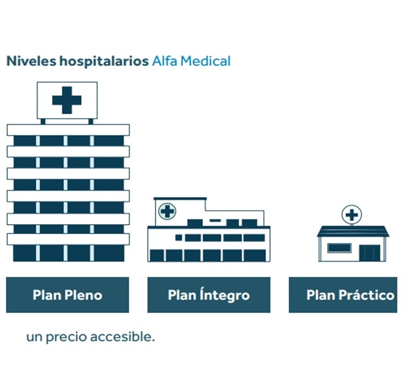
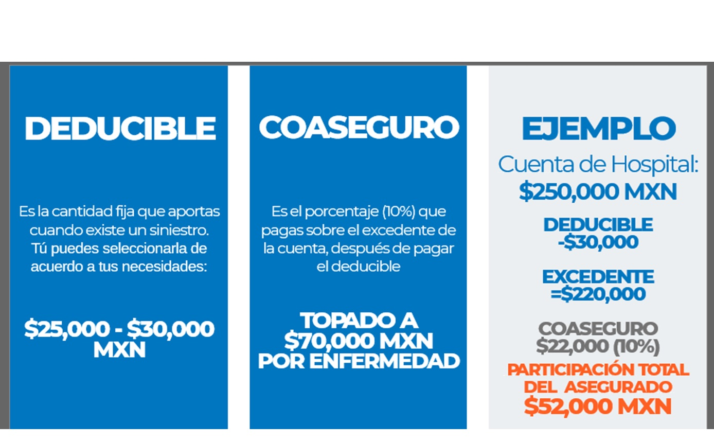

Bienvenido a Loyd's y Navarro
Descubre soluciones de protección y ahorro para tu futuro y el de tu familia.
SeguBeca
Anticípate al futuro, ¡asegura su educación!
SeguBeca te ayuda a concretar los sueños de tus hijos y/o dependientes, garantizando su educación y el acceso a los recursos necesarios para alcanzarlos.
¿Por qué elegir SeguBeca?
- Garantiza la educación de tus hijos para su éxito profesional.
- Opción mancomunada, única en el mercado, con protección independiente para ambos contratantes.
- Protege el valor de tu dinero contra la inflación.
- Ahorro confiable y seguro.
¿Cómo funciona SeguBeca?
- Define el monto de ahorro según el costo aproximado de la universidad y gastos adicionales.
- Selecciona coberturas adicionales para protección en caso de fallecimiento o incapacidad.
- Al cumplir 18 años, recibirá el ahorro concretado.
- En caso de fallecimiento, tu familia contará con una Suma Asegurada igual al ahorro contratado.
Vida Mujer
Vida Mujer es un seguro diseñado especialmente para mujeres, brindando tranquilidad y respaldo financiero en caso de fallecimiento, invalidez o enfermedades graves.
Características:
- Suma asegurada en caso de fallecimiento.
- Apoyo económico por diagnóstico de cáncer de mama o cérvix.
- Asistencia personalizada en caso de emergencia.
- Opciones de cobertura adicional para proteger a tus seres queridos.
Orvi
Orvi de Seguros Monterrey es un seguro de vida diseñado para brindarte tranquilidad, respaldo económico y protección integral para ti y tu familia.
Con Orvi, aseguras el bienestar de tus seres queridos en caso de fallecimiento o invalidez, y cuentas con el respaldo de una de las aseguradoras más sólidas del país.
Características de Orvi:
- Suma asegurada garantizada en caso de fallecimiento del titular.
- Cobertura por invalidez total y permanente.
- Opciones de personalización con coberturas adicionales según tus necesidades.
- Acompañamiento y asesoría personalizada tanto para el asegurado como para los beneficiarios.
Imagina Ser
Imagina Ser de Seguros Monterrey es el plan de ahorro para el retiro que se adapta a tu estilo de vida y te motiva a construir el futuro que sueñas.
Este seguro de vida con ahorro está diseñado para ayudarte a alcanzar tus metas, garantizar tus ingresos durante el retiro y asegurar que disfrutes esa etapa sin depender de nadie, manteniendo tu independencia y bienestar financiero.
¿Por qué elegir Imagina Ser?
- Ahorro a tu ritmo: Tú decides cuánto ahorrar y con qué frecuencia: mensual, semestral o anual.
- Rendimiento garantizado: Tu dinero crece de forma segura en dólares o UDI, sin perder su valor adquisitivo.
- Aportaciones adicionales: Ahorra más cuando puedas y aprovecha beneficios fiscales con deducciones.
- Protección con propósito: Tu familia está protegida económicamente mientras construyes tu retiro.
Cuando llegue tu retiro, tú eliges cómo recibir tu dinero:
- Pago único: Ideal para invertir, emprender o adquirir un bien importante.
- Ingresos mensuales vitalicios: Flujo constante en pesos calculado al tipo de cambio del dólar o UDI.
- Aguinaldo adicional: Recibe un ingreso extra cada diciembre durante los primeros 5 años de tu retiro.
- Pago especial: Solicita un monto equivalente a 6 mensualidades para un viaje, remodelación o meta personal.
- Acceso anticipado: En caso de imprevistos, puedes solicitar un adelanto del 30% de una mensualidad.
Imagina Ser es más que un seguro; es la herramienta para hacer realidad el retiro que deseas, con libertad financiera y tranquilidad para disfrutar lo que más amas.
Seguro de Gastos Médicos Mayores
¿Por qué adquirir un Seguro de Gastos Médicos Mayores?
1.- Protección Personalizada y Completa: Un seguro individual ofrece una cobertura ajustada a tus necesidades específicas, a diferencia de los seguros colectivos que pueden ser genéricos.
2.- Estabilidad en Cambios: Las primas suelen aumentar y las condiciones cambian anualmente. Un seguro personal asegura una cobertura constante y adaptada a tus necesidades.
3.- Reducción de Costos Médicos Altos: Te ayuda a mitigar altos costos médicos en el sector privado, cubriendo una parte significativa y reduciendo el impacto económico familiar.
4.- Cobertura Independiente del Empleo: Ofrece protección continua sin importar tu situación laboral, a diferencia de los seguros proporcionados por empresas que solo cubren mientras estés contratado.
5.- Compensación Efectiva y Rápida: Los siniestros se indemnizan mediante desembolsos directos, facilitando la cobertura de gastos médicos sin demoras y simplificando el proceso.
Opta por la tranquilidad con un Seguro de Gastos Médicos Mayores de Seguros Monterrey New York Life y asegura tu bienestar hoy mismo.
¿Por que contratar un seguro Gastos Médicos Mayores Seguros Monterrey New York Life?
1.- Cobertura Amplia: Protege contra una amplia gama de gastos médicos, incluyendo hospitalización, cirugía, consultas médicas, y tratamientos especializados.
2.- Beneficios por Enfermedades Críticas: Ofrece cobertura para enfermedades graves, garantizando apoyo financiero adicional en casos de diagnóstico de enfermedades críticas como cáncer, infarto o accidentes cerebrovasculares.
3.- Cobertura por Accidentes y Enfermedades: Cubre gastos relacionados con accidentes y enfermedades, asegurando que estés protegido en diversas situaciones que puedan surgir.
4.- Servicios de Atención Personalizada: Brinda asesoría médica y servicios de atención al cliente especializados para ayudarte a gestionar tus necesidades médicas y resolver cualquier duda sobre tu cobertura.
5.- Protección Financiera Contra Costos Elevados: Minimiza el impacto de los altos costos médicos, cubriendo una parte significativa de los gastos y protegiendo tu economía familiar.
6.- Renovación Garantizada: Ofrece la posibilidad de renovar tu póliza cada año sin necesidad de reavaluación médica, garantizando continuidad en tu protección a largo plazo.
7.- Flexibilidad en la Cobertura: Permite adaptar la cobertura a tus necesidades cambiantes a lo largo del tiempo, ajustando tu póliza según tu situación personal y familiar.
8.- Asistencia en Emergencias: Incluye servicios de asistencia en emergencias, tanto en situaciones de salud críticas como en necesidades médicas urgentes.
Estas características aseguran una protección completa y adaptada a tus necesidades, dándote tranquilidad y seguridad en la gestión de tu salud.
Alfa Medical
¿Qué es? Alfa Medical, es la línea de seguros de Gastos Médicos Mayores de Seguros Monterrey New York Life que se especializa en proteger la salud e integridad de los asegurados ocasionados por un Siniestro Amparado por la póliza, a través de diferentes planes para cada necesidad y estilo de vida.
* Cuenta con las coberturas más completas y acceso abierto a los mejores hospitales a nivel nacional.
* Es el perfecto equilibrio entre balance de costo y gama de hospitales.
* Atención médica competitiva de hospitales y de médicos, a un precio accesible.
Tipos de Planes
| Plan | ¿Qué ofrece? | Características |
|---|---|---|
| Pleno | Acceso a los mejores hospitales a nivel Nacional. | * El Asegurado puede atenderse en los mejores hospitales de su zona y a nivel nacional. * Es el plan con los límites más altos en cuanto a coberturas |
| Íntegro | Acceso a una amplia gama de hospitales con un precio competitivo. | * El Asegurado podrá acudir a hospitales de buen nivel, los un precio competitivo. cuales brindan atención de calidad. |
| Práctico | Un equilibrio entre su costo y la gama de hospitales a los que se tiene acceso. | * Es el plan más accesible de la línea, con un balance en el nivel de calidad y servicio. |

Alfa Medical Internacional
¿Qué es? Alfa Medical Internacional, es el plan más exclusivo de Seguros Monterrey New York Life que protege la salud e integridad de los asegurados ocasionados por un accidente, enfermedad o evento de maternidad amparados por la póliza de forma internacional. Es un seguro de Gastos Médicos Mayores Individual con grandes beneficios, ya que el cliente tendrá la mejor atención médica en todo el mundo. Cuenta con el apoyo y coordinación en los trámites que requiera efectuar durante su estancia en el extranjero como:
• Citas con médicos de la red en convenio..
• Coordinación de traslados incluyendo: vuelos, hoteles, ambulancia aérea y terrestre.
• Alojamiento para el asegurado y un acompañante que designe en caso de urgencia.
• En estadía en el extranjero cuenta con el respaldo de Seguros Monterrey New York Life y Global Excel: empresa lider a nivel mundial dedicada a la administración de asistencia médica en el extranjero.
¿Cómo Participar en un Siniestro como Asegurado?

Misión y Visión
Misión: Brindar soluciones integrales en seguros y servicios financieros, ofreciendo protección y tranquilidad a nuestros clientes.
Visión: Ser líderes como consultora para la protección en el ramo de vida, gastos médicos mayores, y asesoramiento en productos financieros destacándonos por nuestro excepcional servicio.
Contacto
Para más información, contáctanos:
Teléfonos: 55 4468 3547 / 722 588 6862.
Email: reservamatematica@gmail.com
Si deseas una cita y que un asesor financiero te presente un producto de tu interés, presiona el siguiente botón:
Valores y Compromisos
Relaciones cercanas con el cliente:
"Nuestra consultoría está enfocada en establecer relaciones cercanas con el cliente."Protección familiar:
"Proporcionar servicios diseñados para proteger tanto a nuestros clientes como a sus familias."Compromiso con la satisfacción del cliente:
Loyd’s & Navarro es una consultora con amplia experiencia en el mercado de seguros, comprometida con la satisfacción de nuestros clientes.Únete a nuestro Equipo: Tu Futuro Comienza Aquí
Loyd's & Navarro preservando tu futuro financiero
¿Buscas una carrera donde puedas ayudar a las familias a asegurar su futuro financiero? Únete a nuestro equipo en seguros de vida y ahorro, donde cada día cuenta para hacer una diferencia significativa.
¿Qué ofrecemos?
- Impacto positivo: Ayuda a proteger el futuro de las personas y sus seres queridos.
- Crecimiento profesional: Oportunidades de aprendizaje continuo y desarrollo personal.
- Ambiente colaborativo: Trabaja en un equipo diverso y dinámico que valora tu contribución.
¡Envía tu CV hoy!
Si tienes pasión por el servicio al cliente y quieres crecer en un sector que importa, ¡esperamos conocerte! Envía tu CV a reservamatematica@gmail.com y únete a nosotros en esta emocionante trayectoria en seguros de vida y ahorro.